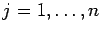
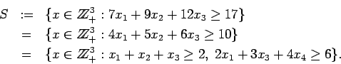
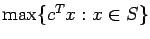
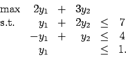
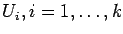

Due: Friday, January 26, 2007.
- 1.
- Model the following scheduling problem as a mixed integer
programming problem:
A set of n jobs must be carried out on a single machine that can only
do one job at a time.
Each job j takes pj hours to complete.
Each job has a target time tj for ,
and a priority weight wj for .
in what order should the jobs be carried out in order to minimize
the total weighted tardiness?
(The tardiness of a job is how late it is,
that is, the difference between the completion time and
the target time if the completion time is greater than the target time.
The tardiness is weighted by the priority weight wj.)
- 2.
- Show that

Which formulation do you think is most effective for solving
? Why?
You may want to experiment with AMPL to confirm your answer.
- 3.
- Consider the following LP, which we call problem (P):

- (a)
- Solve (P) geometrically.
- (b)
- What is the dual (D) of (P)?
- (c)
- Write down the complementary slackness conditions for
this problem and use them to solve the dual (D).
Check your answer by evaluating the optimal costs for
(P) and (D).
- (d)
- For problem (D), what is the optimal basis matrix B?
What are the reduced costs at the optimal solution?
What are B-1, B-1N, cBTB-1N,
cBTB-1b, and
cNT-cBTB-1N?
- 4.
- Model the following problem as an integer program:
Given a graph G=(V,E), vertex weights wv,
and subsets

of the vertices.
Find a minimum weight subset W of the vertices such that
W contains at least one vertex in each Ui
and so that the subgraph of G induced by the vertices in W is connected.
John E. Mitchell
2007-01-19